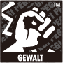
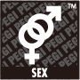
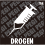
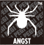
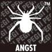
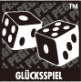

Was ist PEGI?
Das europaweite PEGI-System (Pan European Game Information) zur Vergabe von Altersempfehlungen wurde eingeführt, um Verbrauchern beim Kauf von Videospielen wichtige Informationen zur Hand zu geben. Es trat im Frühjahr 2003 in Kraft und ersetzte verschiedene nationale Altersempfehlungssysteme durch ein einzelnes, das nun in nahezu ganz Europa Anwendung findet.
Spiele, die im Einzelhandel erhältlich sind, sind mit einer deutlich erkennbaren Altersangabe auf der Verpackung versehen. Bei Spielen, die über den Nintendo eShop erworben werden können, werden Sie vor dem Download eines Spiels über die Altersangaben informiert.
Logos und Beschreibungen
Jedes Spiel, welches von PEGI eingestuft wurde, ist mit einem Symbol gekennzeichnet, das die Altersangabe zeigt. In manchen Fällen werden auch Angaben zum Inhalt anhand von Symbolen gemacht.
Alterseinstufungen
Die Symbole des PEGI-Einstufungssystems unterscheiden zwischen den Altersgruppen 3, 7, 12, 16 und 18. Sie geben einen verlässlichen Hinweis darauf, ob das Spiel nach Gesichtspunkten des Jugendschutzes für eine Altersgruppe geeignet ist oder nicht. Der Schwierigkeitsgrad des Spiels oder die für das Spielen erforderlichen Fähigkeiten werden bei der Vergabe der Altersempfehlung nicht berücksichtigt.
Inhaltssymbole






Die Inhaltssymbole geben die wichtigsten Gründe für die jeweilige Altersempfehlung des Spiels an. So wird ein Spiel mit der Einstufung „16“ und einem „Gewalt“-Symbol stärkere Gewalt thematisieren als ein Spiel, welches für Kinder ab 7 Jahren geeignet ist und ebenfalls mit „Gewalt“ gekennzeichnet ist.
- Gewalt
- Spiel enthält Gewaltdarstellungen oder verherrlicht/verharmlost Gewalt.
- Sex
- Spiel zeigt sexuelle Handlungen oder spielt auf sexuelle Handlungen an.
- Nacktheit
- Spiel zeigt Nacktheit.
- Schimpfwörter
- Spiel verwendet Schimpfwörter.
- Drogen
- Spiel bezieht sich auf Drogenkonsum oder zeigt diesen.
- Angst
- Spiel bereitet kleinen Kindern Angst oder ist gruselig.
- Angst
- Das Spiel enthält Bilder und Geräusche die extreme Angst verursachen können.
- Diskriminierung
- Spiel zeigt Diskriminierung oder Spielinhalt fördert Diskriminierung.
- Glücksspiel
- Spiel fordert zum Glücksspiel auf oder gibt Anleitung dazu.
 Aufsicht eines Erwachsenen
Aufsicht eines Erwachsenen- Nicht als Spiel klassifizierbare Anwendungen mit von Nutzern erstellten/professionellen Inhalten, die in Teilen möglicherweise nicht für kleine Kinder geeignet sind.
Um weitere Informationen zu PEGI zu erhalten, besuchen Sie bitte www.pegi.info.